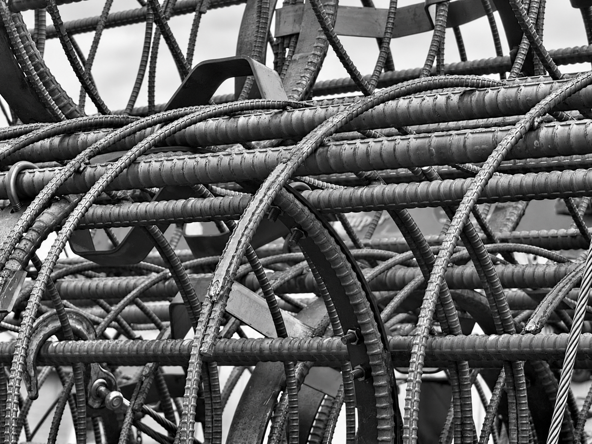
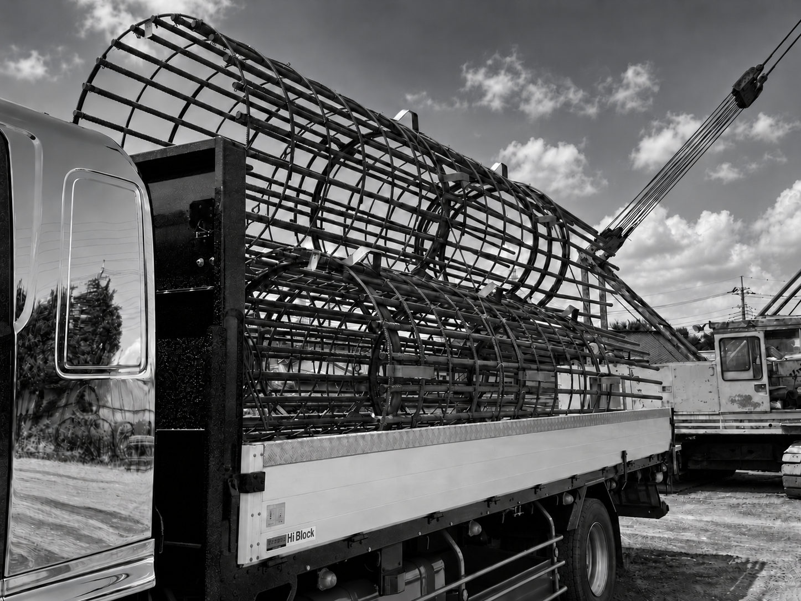

01

REBAR WORKMAIN SERVICE
鉄筋工事
建物の骨格となる鉄筋を、図面に沿って正確に組み立てます。豊富な現場経験を活かし、品質と安全を両立した施工を行います。
- マンション・ビル・工場
- 公共施設・商業施設
NISHINO KOGYO / SERVICE
確かな技術と現場力で、
建物の強さをつくる。
鉄筋工事を中心に、加工・運搬から現場での施工まで。
一つひとつの工程に責任を持ち、建物の未来を支えます。
SERVICE
現場の状況やご要望に合わせて、最適な方法をご提案します。

REBAR WORKMAIN SERVICE
建物の骨格となる鉄筋を、図面に沿って正確に組み立てます。豊富な現場経験を活かし、品質と安全を両立した施工を行います。

PROCESSING & DELIVERYONE-STOP SUPPORT
必要な鉄筋を現場に合わせて加工し、適切なタイミングでお届けします。施工の流れを止めない段取りで、現場の負担を軽減します。
QUALITY CONTROL
内装工事における工程・品質・安全を一元的に管理します。各業者と連携し、仕上がりと進捗を確認しながら、円滑な現場運営を支えます。
CREATIVE SUPPORT
お客様の事業やサービスが持つ魅力を整理し、目的やご要望に合わせたデザインをご提案します。見た目の美しさだけでなく、情報が分かりやすく伝わる設計を大切にしています。